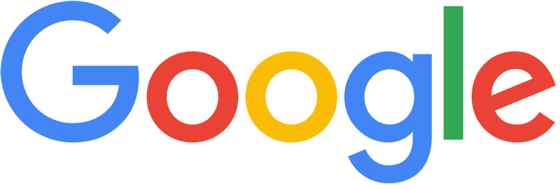

Digital badges are used by businesses all over the world
Learners on the programme will earn 'digital badges' in recognition for completing workshops, programmes and getting involved in FabLab Coventry projects. You will be able to keep your badges forever and share what you have achieved with employers, your online community via social media or potential education providers.
As part of Connect2 we also hope to offer other badges from the different partners within Coventry. Digital Badges are recognised across the world - join us to find out more!